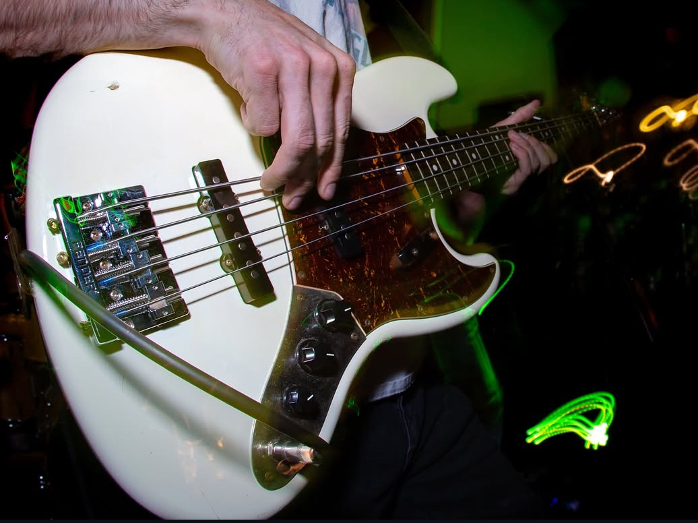
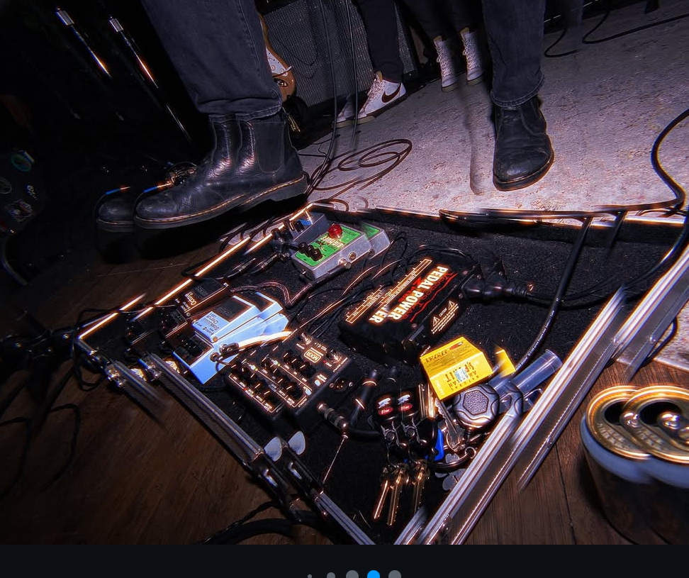
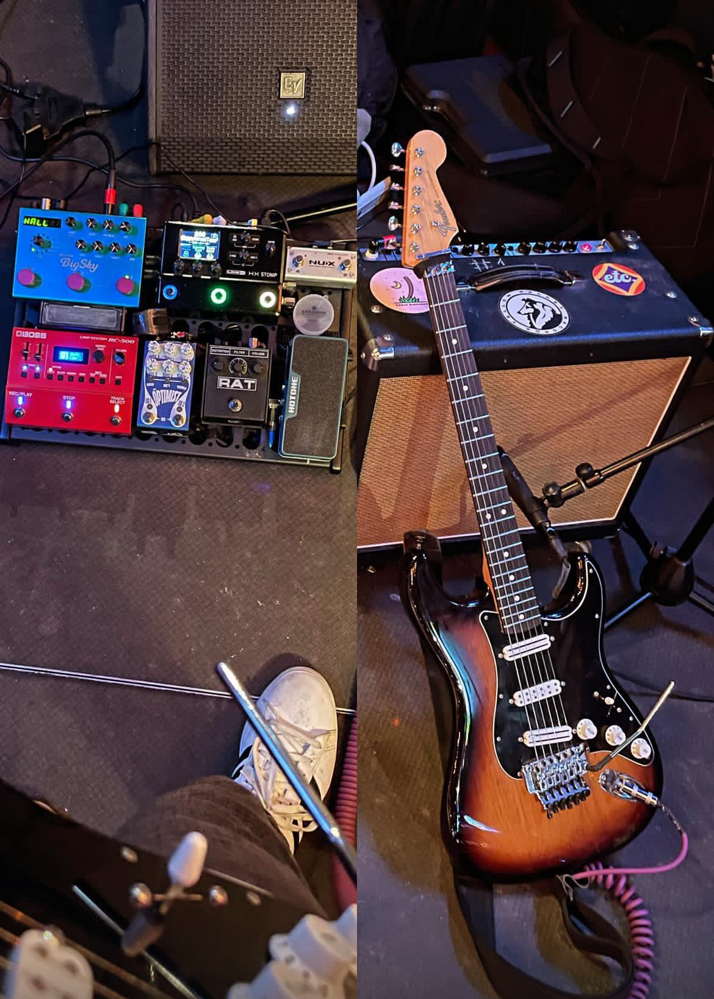
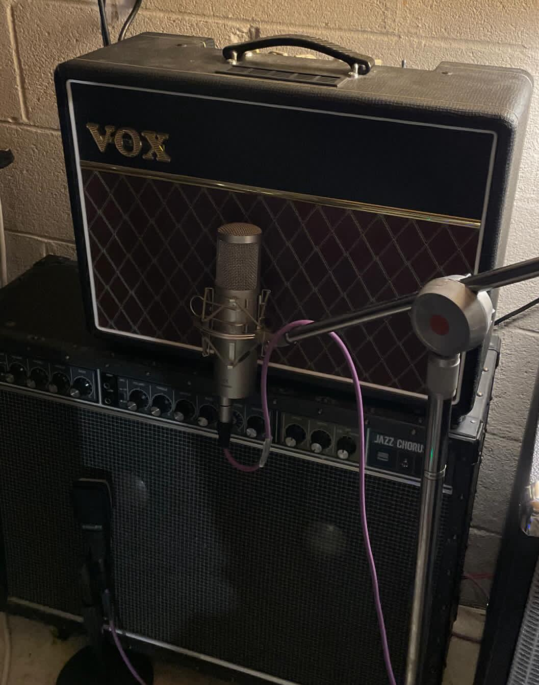
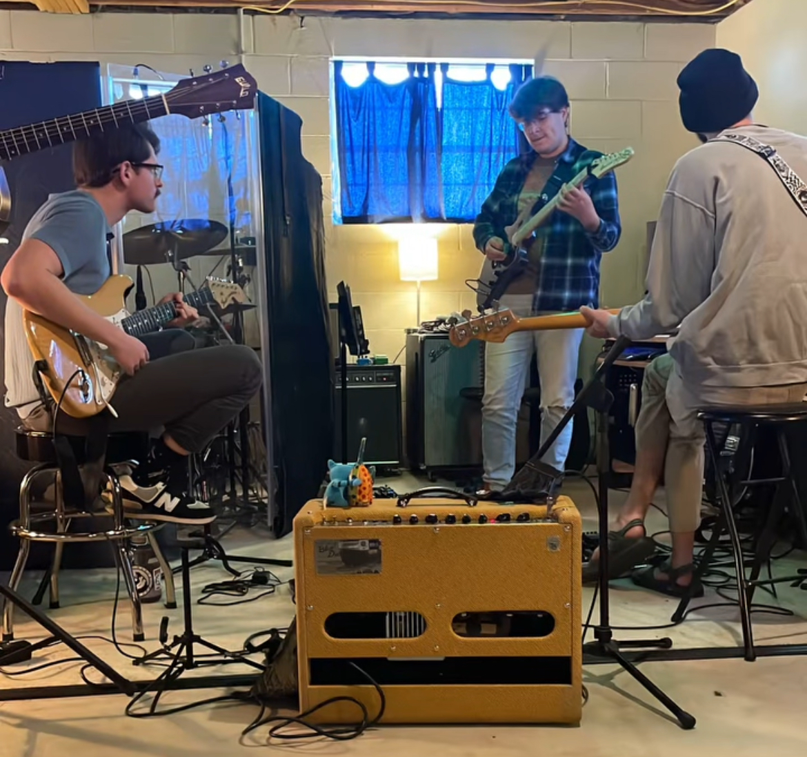
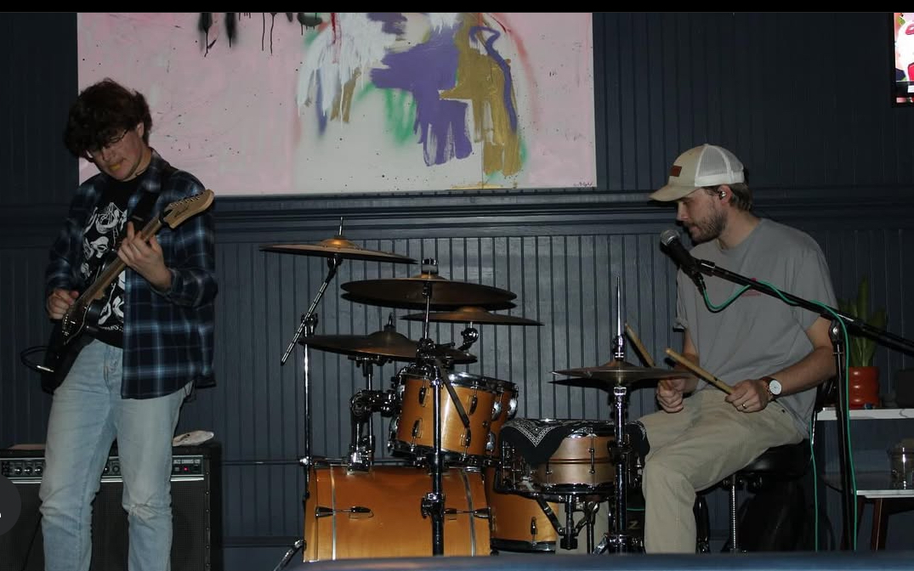

Brett Tallent
Brett Tallent holds down the low end with a killer combination of classic tone and modern versatility—and he’s not just a bassist, but also a vocalist, adding depth to the band’s sound both musically and vocally. His main bass is the Squier Classic Vibe '60s Jazz Bass, a vintage-inspired workhorse known for its smooth, rounded tone and excellent playability. When he needs more low-end power and extended range, he switches to a Marcus Miller 5-String P Bass, giving him that signature punch with added flexibility. Brett’s rig is all about tone control and dynamic presence. He runs through an Ampeg amp for that iconic bass growl and warmth, with an MXR Bass Preamp to shape his EQ and add some extra punch. A Boss OC-5 Octave Pedal lets him fill in sonic gaps and drop in synthy textures when needed, while an 1176 Compressor tightens everything up, keeping his tone consistent and punchy whether live or in the studio. In addition to laying down bass lines, Brett handles vocal duties with a Shure SM58, the go-to mic for countless performers thanks to its reliability, clarity, and road-ready toughness. His vocals blend seamlessly into the mix, adding harmonic weight or taking the lead when needed—making him a key part of the band’s onstage presence in more ways than one.
 Ben Daugherty
Ben Daugherty is the band’s sonic chameleon, effortlessly shifting between high-energy riffing, melodic leads, and lush ambient textures. His main guitar is the Fender Dave Murray Stratocaster, a powerhouse instrument that blends classic Strat DNA with modern upgrades. Outfitted with a pair of hot humbuckers and a Floyd Rose trem system, it’s built for versatility—equally at home with punchy cleans, soaring leads, and saturated gain. It’s Ben’s go-to for most sets, providing the tonal range and reliability needed to anchor his playing style. Complementing the Strat is his Guild Surfliner HH, which brings a brighter, more articulate edge to the mix. Despite its humbucker configuration, the Surfliner cuts through with a sharp, jangly character—perfect for surf-inspired textures, rhythm lines that need clarity, or melodic parts that sit high in the mix. Then there’s the Gretsch Pro Jet strung with flatwound strings, which gives Ben a smoother, rounder tone—ideal for laid-back grooves, vintage warmth, or quieter moments in the set. Amp-wise, Ben rotates between a few key pieces depending on the vibe. The Tech 21 Trademark 60 delivers analog-style modeling with flexible tone shaping, while the Vox AC10 brings that sweet, chiming British crunch. When he needs lush, crystalline cleans, the Roland JC-120 is the move—especially when paired with his ambient effects chain. That chain is a deep one. The Strymon BigSky provides expansive reverb textures, from subtle room ambiance to full-blown ethereal soundscapes. For overdrive and distortion, Ben leans on the gritty edge of the ProCo Rat and the polished versatility of the Jackson Audio Optimist. The Line 6 HX Stomp fills in the gaps with amp modeling, modulation, and creative effects—all housed in one compact unit. His Hotone WONG Press adds expressive control over wah or parameter shifts, giving him even more range to shape his tone in real time.
 Neal Brite
Neal Brite brings a unique voice to the band, toggling between soulful saxophone lines and expressive electric guitar work, often within the same set. On sax, he keeps things clean and mobile with a Shure wireless system, giving him the freedom to move around the stage and interact with the rest of the band without being tethered to a mic stand. It’s a subtle but essential part of his setup that makes his live presence feel effortless and fluid. When he picks up the guitar, Neal leans into a classic feel with his Fender large headstock Stratocaster, upgraded with DiMarzio pickups for a hotter, more defined tone. The result is a Strat that retains all the signature snap and quack but with a little more punch and output—perfect for cutting through a mix or laying into solos with extra clarity. His pedalboard is tight and purposeful. The Fulltone OCD provides a rich, dynamic overdrive that responds beautifully to picking nuances, while the Keeley Hydra handles both reverb and tremolo duties, offering ambient depth and subtle motion when needed. For time-based effects, he runs a Boss DD-200, a compact but powerful delay unit that gives him access to everything from warm analog repeats to rhythmic digital echoes. All of that tone is pumped through a Fender Deluxe Tweed, a classic amp known for its warm cleans, rich breakup, and vintage character. Whether Neal’s on sax or six strings, his gear reflects a deep understanding of tone and dynamics—always tasteful, always in service of the song.
Hall Hastings
Hall Hastings is the rhythmic backbone of the band, combining precision, feel, and texture to create grooves that are as musical as they are powerful. He plays a Pearl kit built with birch shells, which offer a naturally punchy, focused tone with plenty of projection. The birch construction gives his toms and kick a crisp attack that cuts through the mix, while still delivering warmth and depth when needed. Whether it's tight, syncopated patterns or open, dynamic playing, Hall's kit delivers with clarity. For cymbals, Hall turns to Zildjian, favoring their balanced response and musicality. From the sharp articulation of his hi-hats to the shimmering wash of his crashes and rides, every piece of his setup is chosen to complement the band’s dynamic range—never overpowering, but always present. His cymbal work brings texture and color to the songs, anchoring transitions and lifting choruses without missing a beat. Adding a modern edge to his acoustic setup, Hall incorporates a Roland sample pad, allowing him to trigger textures, hits, and atmospheric sounds in real time. It’s a key part of the band’s hybrid sound, giving him the flexibility to blend acoustic and electronic elements seamlessly. Whether it’s subtle loops or full-on percussive samples, the pad expands his sonic palette and keeps the band’s live sound fresh and dynamic.
